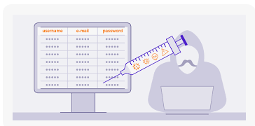
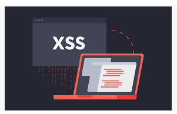
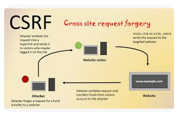
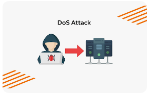
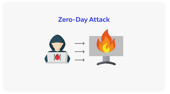
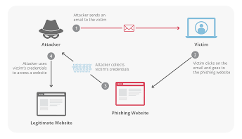
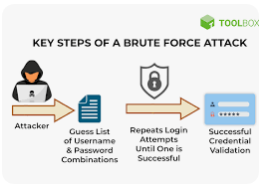
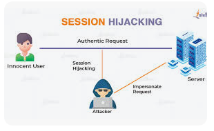
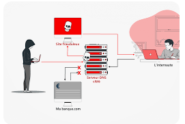

| Activity | Date |
|---|---|
| First day to enrol for re-enrolling (continuing) students | 20 Nov 2023 |
| Lectures Commence (weeks 1-7) | 26 Feb - 12 Apr 2024 |
| Last day to enrol / add subjects yourself | 08 Mar 2024 |
| Last day to enrol / add subjects with Head of Students approval (extenuating circumstances only) | 15 Mar 2024 |
| Mid-Session Recess (1 week) | 15 Apr - 19 Apr 2024 |
CENSUS DATE
|
22 Apr 2024 |
| Name | Web Attacks |
|---|---|
| 1. SQL Injection  |
SQL Injection is a method where attackers execute arbitrary SQL commands via input data from the client. This can lead to unauthorized access or manipulation of the database. Source: owasp.org/index.php/SQL_Injection |
| 2. Cross-Site Scripting (XSS)  |
XSS attacks involve injecting malicious scripts into content from trusted websites, allowing attackers to steal cookies or other sensitive information. Source: owasp.org/www-community/attacks/xss/ |
| 3. Cross-Site Request Forgery (CSRF)  |
CSRF tricks users into submitting a malicious request, exploiting the trust that a site has in the user's browser. This causes the user to perform unwanted actions. Source: owasp.org/index.php/Cross-Site_Request_Forgery_(CSRF) |
| 4. Denial-of-Service (DoS)  |
DoS attacks aim to make a website unavailable by overwhelming it with traffic, disrupting service for legitimate users. Source: https://www.cloudflare.com/en-gb/learning/ddos/glossary/denial-of-service/ |
| 5. Zero-Day Attack  |
A Zero-Day attack occurs when attackers exploit a previously unknown vulnerability in software before the developers can issue a fix. These attacks are particularly dangerous because they take advantage of vulnerabilities that have no known defense. Source: https://www.kaspersky.com/resource-center/definitions/zero-day-exploit |
| 6. Man-in-the-Middle (MitM) |
MitM attacks intercept and alter communication between two parties, exposing sensitive information. Source: https://en.wikipedia.org/wiki/Man-in-the-middle_attack |
| 7. Phishing  |
Phishing tricks individuals into providing sensitive information by impersonating a trustworthy entity, often through email or fake websites. Source: phishing.org/what-is-phishing |
| 8. Brute Force Attack  |
A brute force attack involves systematically trying all possible passwords until the correct one is found, used to gain unauthorized access. Source: https://www.fortinet.com/resources/cyberglossary/brute-force-attack |
| 9. Session Hijacking  |
Session hijacking takes over a valid session between a user and server, allowing attackers to impersonate the user. Source: owasp.org/www-community/attacks/Session_hijacking_attack |
| 10. DNS Spoofing  |
DNS Spoofing corrupts the DNS cache to redirect traffic from a legitimate site to a malicious one, leading to phishing or malware attacks. Source: https://www.proofpoint.com/au/threat-reference/dns-spoofing |